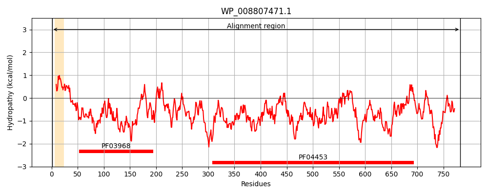
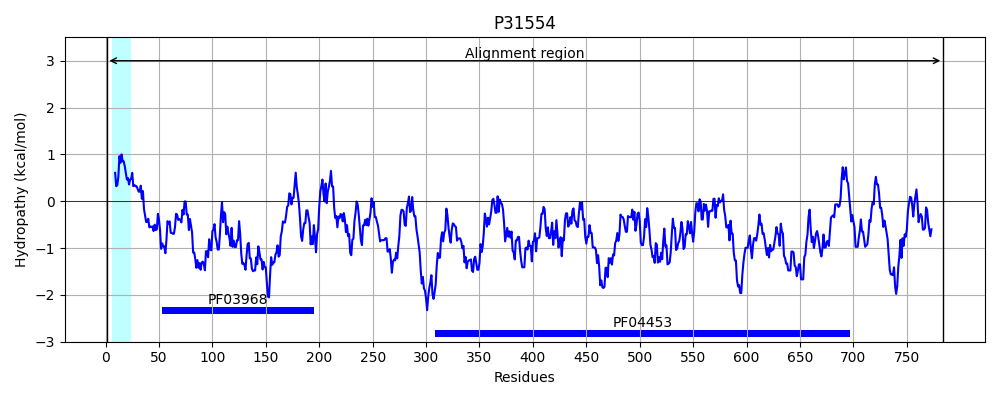
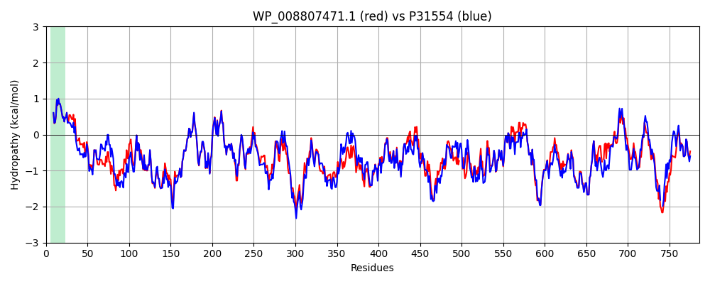

Hit Accession: P31554
Hit TCID: 1.B.42.1.2
Hit Description: gnl|BL_ORD_ID|9782 gnl|TC-DB|P31554|1.B.42.1.2 LPS-assembly protein LptD OS=Escherichia coli (strain K12) GN=lptD PE=1 SV=2
Mach Len: 786
e:0.000000
Query TMS Count : 1
Hit TMS Count: 1
TMS-Overlap Score: 0.950000
Predicted Substrates:CHEBI:6494;lipopolysaccharide
BLAST Alignment:
Score: 3516 , Bit scores: 1358 bits, E-value: 0.0e+00, Alignment length: 786, Percentage identity: 82
Query: 1 MKKRIPSLLATMIASALYSQQGLAADLATQCMLGVPSFDRPLVEGRPGDLPVTINADHAKGNYPDNAVFTGNVDINQGNSRLRADEVQLHQQQAAGQAQPVRTVDALGNVHYDDNQVILKGPKAWSNLNTKDTNVWQGDYQMVGRQGRGTADLMKQRGENRYTILENGSFTSCLPGSDTWSVVGSEVIHDREEQVAEIWNARFKLGSVPIFYSPYLQLPVGDKRRSGFLIPNAKYSTKNGVEFSLPYYWNIAPNFDATITPHYMNKRGGVMWENEFRYLTQLGSGLTEFDYLPSDKVYEDDHSSDSNSRRWLFYWNHSGVIDQVWRLNADYTKVSDPDYFNDFSSKYGSSTDGYATQKFSAGYVNQNFDATVSTKQFQVFDRESSNSYSAEPQLDINYYQNDVGPFDTHLYGQVAHFVNSNNNMPEATRVHLEPTINLPLSNAWGSLNTEAKLLATHYQQSNLDKYNAANGTDYKESVSRVMPQFKIDGKMVFERDLQ---EGFTQTLEPRMQYLYVPYRDQSEIGSYDSTLLQSDYTGLFRDRTYSGLDRIASANQVTTGITSRVYDAAAVERFNISVGQIYYFTESRTGDDNINWENNDTTGSLVWAGDTYWRIADDWGLRGGIQYDTRLDNVATGNGTIEYRRDENRLVQLNYRYASPEYIQATLPS-YSTAAQYKQGISQVGMTASWPIVDRWSVVGAYYFDTNTRKAANQMLGVQYNSCCYAIRLGYERKVNGWDSNNNGGESKYDNTFGINIELRGLSSNYGLGTQQMLRSNILPYQSSL 782
MKKRIP+LLATMIA+ALYSQQGLAADLA+QCMLGVPS+DRPLV+G DLPVTINADHAKG+YPD+AVFTG+VDI QGNSRL+ADEVQLHQ++A GQ +PVRTVDALGNVHYDDNQVILKGPK W+NLNTKDTNVW+GDYQMVGRQGRG ADLMKQRGENRYTIL+NGSFTSCLPGSDTWSVVGSE+IHDREEQVAEIWNARFK+G VPIFYSPYLQLPVGDKRRSGFLIPNAKY+T N EF LPYYWNIAPN DATITPHYM++RG +MWENEFRYL+Q G+GL E DYLPSDKVYED+H +D +SRRWLFYWNHSGV+DQVWR N DYTKVSDP YFNDF +KYGSSTDGYATQKFS GY QNF+ATVSTKQFQVF ++++SYSAEPQLD+NYYQNDVGPFDT +YGQ HFVN+ ++MPEATRVHLEPTINLPLSN WGS+NTEAKLLATHYQQ+NLD YN+ N T ESV+RVMPQFK+DGKMVFERD++ G+TQTLEPR QYLYVPYRDQS+I +YDS+LLQSDY+GLFRDRTY GLDRIASANQVTTG+TSR+YD AAVERFNISVGQIYYFTESRTGDDNI WEN+D TGSLVWAGDTYWRI++ WGLRGGIQYDTRLDNVAT N +IEYRRDE+RLVQLNYRYASPEYIQATLP YSTA QYK GISQVG ASWPI DRWS+VGAYY+DTN K A+ MLGVQY+SCCYAIR+GYERK+NGWD N+ + YDN G NIELRGLSSNYGLGTQ+MLRSNILPYQ++L
Sbjct: 1 MKKRIPTLLATMIATALYSQQGLAADLASQCMLGVPSYDRPLVQGDTNDLPVTINADHAKGDYPDDAVFTGSVDIMQGNSRLQADEVQLHQKEAPGQPEPVRTVDALGNVHYDDNQVILKGPKGWANLNTKDTNVWEGDYQMVGRQGRGKADLMKQRGENRYTILDNGSFTSCLPGSDTWSVVGSEIIHDREEQVAEIWNARFKVGPVPIFYSPYLQLPVGDKRRSGFLIPNAKYTTTNYFEFYLPYYWNIAPNMDATITPHYMHRRGNIMWENEFRYLSQAGAGLMELDYLPSDKVYEDEHPNDDSSRRWLFYWNHSGVMDQVWRFNVDYTKVSDPSYFNDFDNKYGSSTDGYATQKFSVGYAVQNFNATVSTKQFQVFSEQNTSSYSAEPQLDVNYYQNDVGPFDTRIYGQAVHFVNTRDDMPEATRVHLEPTINLPLSNNWGSINTEAKLLATHYQQTNLDWYNSRNTTKLDESVNRVMPQFKVDGKMVFERDMEMLAPGYTQTLEPRAQYLYVPYRDQSDIYNYDSSLLQSDYSGLFRDRTYGGLDRIASANQVTTGVTSRIYDDAAVERFNISVGQIYYFTESRTGDDNITWENDDKTGSLVWAGDTYWRISERWGLRGGIQYDTRLDNVATSNSSIEYRRDEDRLVQLNYRYASPEYIQATLPKYYSTAEQYKNGISQVGAVASWPIADRWSIVGAYYYDTNANKQADSMLGVQYSSCCYAIRVGYERKLNGWD--NDKQHAVYDNAIGFNIELRGLSSNYGLGTQEMLRSNILPYQNTL 784 | Protein Hydropathy Plots: |
|---|
|  |  |
Pairwise Alignment-Hydropathy Plot:
|
|---|
|  |